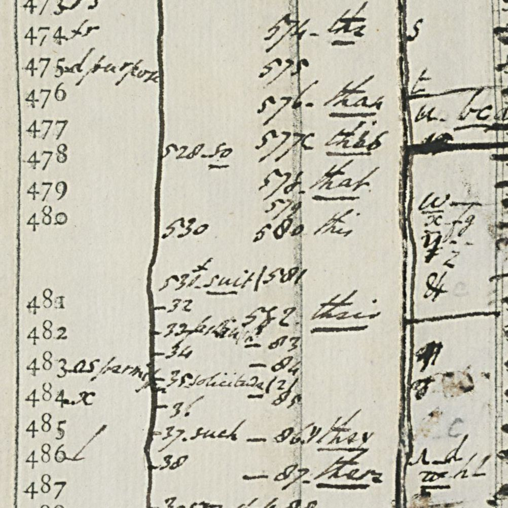

01 The letter

The letter covers three pages (ff. 148r, 148v, 149r). The address leaf f. 149v carries the endorsement and “Given by Mr G. Holmes”. It answers the recipient’s letter of 1 April and follows Reade’s own letter of the 16th. The clear text covers:
- a malicious report that Reade had said, to two French gentlemen in a garden, that the Lords of the Parliament are fools. He denies it at length and asks the recipient to raise it with the Lord Chief Justice;
- the roads full of soldiers, which keep the household in its quarter of Paris for another month;
- “My Lo: Lieutenant”, Strafford, then on trial, “fallen into the hands of noblemen and persons of honor”;
- the King’s box of papers and a copy held by Mr Treasurer;
- the Queen’s business;
- Mr Montagu’s arrival, “very civilly” received;
- Sir William St Ravy leaving for England;
- a defence of Mr Forster, lodged with the household.
The cipher begins where the letter turns to Windebank himself: “It is to be seriously considered what is to be done”.
02 The key

DECODE R9115 is a two-page working sheet. The Deciphering Branch printed a blank grid of numbers and filled in the values as they were recovered. The first page is headed “Windebank to his Son. Paris. March 1642”, the second “Windebank’s C[ipher] continued 1640”. The cipher has four parts:
- 1–50: single letters. Every odd number is marked + (a null). The even numbers are letters: 2 c, 4 f, 6 n, 8 h, 10 r, 12 t, 14 a, 16 g, 18 p, 20 b, 22 u, 24 o, 26 l, 28 e, 32 k, 34 m, 36 i, 40 s, 42 x, 44 d.
- 51–100: more letters and syllables: 51 r, 53 c, 54 l, 55 s, 56 a, 57 d, 58 m, 59 t, 60 e, 62 n, 64 i, 66 p, 68 o, 69 h, 72 u, 73 and, 74 am, 75 as, 93 again, 97 an.
- Symbol letters: m n, E o, ω m, Ǝ r, ⊔ i, + l, φ s, Δ t, * y, ⊕ a, π c, ɔ d, ∪ e, C p, and others.
- A code in alphabetical order from 100 to about 735: 128 be, 183 can, 202 do, 276 from, 323 him, 335 his, 362 King, 457 Parliament, 533 shall, 572 to, 574 the, 578 that, 636 will, 732 England, 735 France.
Reade’s letter uses the same cipher. The most frequent code groups in it are the reconstruction’s the, to and that, and its symbol letters are the key’s. Several signs first transcribed as digits turned out to be symbols once the key was read: φ looks like an 8, ɔ like a 2, and the looped n-sign like a D.
03 The reading
Plain type is read from the key. Words in italics come from values rebuilt here. Words in [brackets] are conjectures for groups the key leaves blank (section 04). Nulls are dropped.
Passage A (f. 148v foot to f. 149r), after the clear “It is to be seriously considered what is to be done”:
in case a proclamation shall goe out against my [455: patron?] as against the last [673], for as to the one side, I am of opinion they have not enough against him to confiscate his fortune, and they would be willing to take the advantage of his refusall to return upon the a summons. So on the other side, I do not find how his person can be secure if he shall return. The only [way] i[s] [conceived] to be that [His Majesty] will please to prevent that cause, if they purpose to take it, bu[t pres]sing that [Mr Forster] [should] give in his [90]; but God knows why that will suit.
Passage B (f. 149r), after the clear “Sir William St Ravy (as I hear) parts this day for England, but I do but hear it from others, for he comes not at us”:
I am [informed] he has done [Mr Forster] no good [offices] here, and that he will not do him the best in Court; they have an eye [over] him.
The clear text goes straight on: “It may be that Mr Forster may have ill offices done him in England…”. That confirms the sense of the passage and supports the conjecture that 718 is Forster.
04 What remains uncertain
The passages have 254 groups, 215 of them after the nulls are dropped. Grades follow the README conventions: H read from the key, C a rebuilt value with firm context, M a conjecture.
- H, 191 groups (88.8%): read from values on the key, including 203 done and 729 “ct.” (Court), which are side notes on the sheet.
- C, 11 groups (5.1%): values rebuilt from the code’s alphabetical slot and the context. They are 100 advantage, 275 find, 437 one, 524 return (twice), 562 secure, 573 they/the (four times) and 660 willing. 573 fits “they” in three places. In “upon 573 a summons” it reads better as “the”, and there the 14 (a) is probably a slip.
- M, 13 groups (6.0%): blank on the reconstruction and conjectured.
- 650 way, 160 conceived, 319 His Majesty, 539 should.
- 718 Forster (twice), 359 informed 444 offices, 452 over.
- 487 (inside “bu…ing”), 90 (his answer or account), 455 (my patron?) and 673 (the last Lord Keeper? Finch fled in December 1640 as Windebank did).
Only a fuller copy of the key would settle these. No other Windebank key is on DECODE, and no Windebank letter in this cipher was found there.
05 Method
- The images were fetched from DECODE and the two passages transcribed. The signature and endorsement gave the writer.
- The key of “Mr Browne” (R8694, Add MS 72438) was tried first and failed. Its code stops at 371, and its alphabet gives nothing.
- A search of the DECODE record list for Windebank found R9115 in Add MS 32256. Both of its pages were read at full resolution and entered as a table.
- The table was applied to the passages, the doubtful glyphs were re-read against the key’s symbol list, and the result was measured.
No printed edition or calendar of the letter was found. Harleian letters of this kind are outside the Calendars of State Papers Domestic.
06 Sources
- British Library, Harley MS 7001 ff. 148–149: DECODE R7766 (images, login).
- British Library, Add MS 32256 f. 4 and its continuation page, the Windebank cipher reconstruction: DECODE R9115.
- British Library, Add MS 72438 ff. 70–71, key of “Mr Browne”: DECODE R8694 (does not fit).
Transcription, key table, decoder and notes: harley7001/ in the repository.